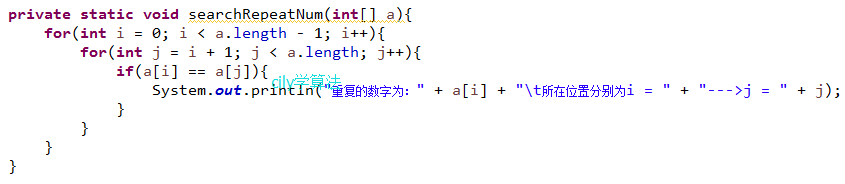
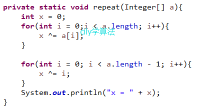
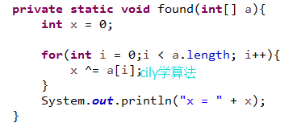
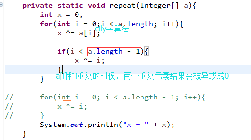

之前，我遇到过这么一道题，题目原文已记不清了，只记住了个大概意思。大意是：有个百万级别的大于0的整数数组，其中有一个元素是有重复的，并且仅重复一次，请使用基础算法，找出这个重复的数字。按照一般的思路，两层for循环，即可实现找出这个重复的数字，具体代码为：
很显然，这种算法是最简单，最直观的，最容易理解的。But，这真是题目的本意吗？仔细想想，如果题目仅仅只想考这个，完全没有任何意义啊。再想想，为何题目强调百万级别的数组？为何只有一个重复的数字？看来，题目并不想考察两层for循环。仔细想想，我们好像疏忽了什么，对，就是java的位运算。平时我用的比较少，所以，给疏忽了。在位运算里，异或算法有个特点：a ^ a = 0, a ^ 0 = a。任何数异或自身结果为0，异或0结果为自身，且异或满足交换律a ^ b = b ^ a；满足结合律a ^ b ^ c = a ^ (b ^ c)，这就是解决这题的关键。
后来，上网搜了一下，发现可能是我记错或记的不准确，网上公开的题目是，比如：一个长度为1001的数组（数组是无序的），里面的元素是1到1000，另一个是1到1000中间的一个数字，要求找出这个重复的数字。关键思路：1^2^3 ... ^n ... ^n ... ^999^ 1000 = T(T的结果里，是异或两个n的结果)；1^2^3...^n...^999^1000 = U(U的结果，是异或一个n)； T和U异或（T ^ U = 1^2^3 ... ^n ... ^n ... ^999^1000 ^ 1^2^3...^n...^999^1000，根据交换律和结合律以及任意数异或自身结果为0，任意数异或0结果为自身，该运算的结果为0 ^ n即n），即为所需的n。具体代码为：
题目再延伸一下，如果数组里，有且仅有一个元素是不重复的，其他的元素均出现2次，又该如何解决呢？有了上面的代码，这个题目也好解决，个人看法就是，异或到重复的元素，就把以前的元素给抵消掉了，遍历到数组最后一个元素，除了那个唯一的元素，其他的重复元素都被异或成0了，而0异或唯一元素，即为所需的唯一元素，具体代码为：
再回过头来看看第一道题，求唯一重复的那个数，看看代码，我们用了两次for循环，能不能去掉一个呢？联想一下如何求唯一不重复的解答思路，重复的元素，异或的时候，会被抵消掉。于是，求唯一重复的元素代码，完全可以改一下，改正过后的代码为：
